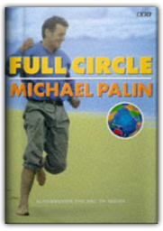

The Earth from the Air
Lester R. Brown, Yann Arthus-Bertrand
The Earth from the Air
Lester R. Brown, Yann Arthus-Bertrand


French photographer Yann Arthus-Bertrand and his devoted team have spent five years putting together this voluminous gallery, selecting 195 images from 100,000 photographs taken from helicopters in the skies over 75 countries. It is a staggering achievement and precisely shows how vaguely we know our world. Statistics play a secondary, but vital, role; the text that accompanies the shots (a paragraph each, with a short essay adorning every chapter), highlights the degree to which we have abused our Eden, providing a sobering adjunct to what can at times be mistaken for a planetary holiday brochure. Of primary concern, however, are the pictures. Almost every plate is double page, reproduced in sumptuous vibrant colour, with helpful fold-out notes for each shot. The standard is a visual treat but, damn it, books should be luxurious sometimes. Huge African cotton bales become cauliflowers, logs floating down the Amazon are nothing more than matchsticks, the extraordinary contours of Turkey's Cappadocia are more like lunarscapes and South African sea-lions gathered to mate eerily echo an earlier crowd of curious humans in Côte D'Ivoire. In contrast, a solitary human figure frequently gives perspective to a shot, though occasionally superfluously, for the obliquity of perception can add resonant depth, reducing mighty river courses to glistening snail trails. Much on show is conventional, exceptional landscape photography, but Arthus-Bertrand also trains his lens on our fingerprints smudging the idyll, such as the depressingly overcrowded shanty towns, favelas of Rio de Janeiro or the sprawling communal rubbish heap of Mexico City. However, the hovering eye, like a benevolent celestial deity, cannot help but impose a fragile beauty even on these blights, reclaiming the scarring chaos from its despoilers and harnessing the sense of mortal finitism necessary for a solution of ecological sustained development to be convincingly reached. Arthus-Bertrand's desire to take his art "beyond the anecdotal", to give his subject the space in which to impose its own beauty, allows a gleefully conspiratorial voyeurism, at once empowering and humbling, that at its best captures something quasi-religious in its intense calm. As Louis Armstrong once growled, what a wonderful world. —David Vincent
Mountains from Space: Peaks and Ranges of the Seven Continents
Stefan Dech, Rudiger Glasser, Reinhold Messner

The World of Leonardo Da Vinci: The story of his life & work including 30 rare removable facsimile documents
Matthew Landrus
The World of Leonardo Da Vinci is a HB book in a board slipcover. The book is landscape and tells the story of this artist/engineer's life & times & looks at major works that dominate Leonardo's work. Beautilly illustrated it contains copies of records ie: record of Leonardo's birth, his passport, his notes, maps, drawings & letters.

Full Circle: A Pacific Journey with Michael Palin
Michael Palin
Having gone round the world and down the poles in Around the World in 80 Days and Pole to Pole, it seems fitting that Michael Palin should complete his travel odyssey for the BBC by completing Full Circle, the book which describes his journey through the 18 countries which border the Pacific Rim, and which make a rough circle of 11,000 miles in diameter. The result is a journey which, even by Palin's standards, is truly epic. |
 Made with Delicious Library
Made with Delicious Library
Springfield, State zipflap congrotus delicious library Clancy, Liam